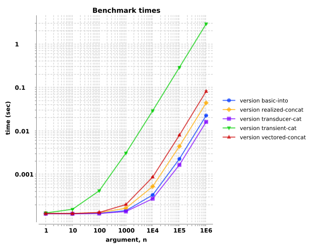

clojure.core/concat is lazy, so it's perhaps not the best suited for
transduce tasks, which are eager. There are a handful of tactics for concatenating two vectors, so let's run some benchmarks to see if any
particular tactic performs objectively faster than the others. Benchmarks are defined here.
Overall, we observe that the into and transducer tactics (closely related to each other), perform the best. Since they perform the best, and their implementation is straightforward, those are used in the concatv core utility.
We'll consider five concatenation tactics.
| realized concat |
(doall (concat v1 v2))
|
| vectored concat |
(vec (concat v1 v2))
|
| basic into |
(into v1 v2)
|
| transient cat | implementation here |
| transducer cat |
(into v1 conj v2)
|
For each of those five tactics, we'll feed a pair of vectors, v1 and v2, with lengths, n, ranging from one to
a million, increasing by decade. We'll use Criterium to measure the execution times. Each data
point is the mean±std of sixty measurements.
Execution times increase with vector length. The looping transient tactic is substantially slower (i.e., higher times in seconds). The two
into tactics performed the best for all lengths of vectors, with the transducer tactic slightly better.

| arg, n | |||||||
|---|---|---|---|---|---|---|---|
| version | 1 | 10 | 100 | 1000 | 10000 | 100000 | 1000000 |
| basic-into | 1.2e-04±1.9e-06 | 1.2e-04±1.8e-06 | 1.2e-04±1.4e-06 | 1.4e-04±1.8e-06 | 3.3e-04±1.7e-06 | 2.2e-03±3.1e-05 | 2.2e-02±3.4e-04 |
| realized-concat | 1.2e-04±2.6e-06 | 1.2e-04±2.3e-06 | 1.3e-04±2.3e-06 | 1.6e-04±2.9e-06 | 5.2e-04±6.9e-06 | 4.4e-03±1.0e-04 | 4.4e-02±1.6e-03 |
| transducer-cat | 1.2e-04±1.1e-06 | 1.2e-04±9.9e-07 | 1.2e-04±9.4e-07 | 1.4e-04±1.5e-06 | 2.7e-04±1.9e-06 | 1.6e-03±2.6e-05 | 1.6e-02±3.6e-04 |
| transient-cat | 1.3e-04±1.0e-06 | 1.5e-04±2.4e-06 | 4.1e-04±9.9e-06 | 3.0e-03±8.8e-05 | 2.9e-02±7.1e-04 | 2.8e-01±7.2e-03 | 2.9e+00±4.3e-02 |
| vectored-concat | 1.2e-04±2.6e-06 | 1.2e-04±1.5e-06 | 1.3e-04±1.6e-06 | 2.0e-04±2.7e-06 | 8.6e-04±1.1e-05 | 7.9e-03±1.2e-04 | 8.0e-02±3.4e-03 |